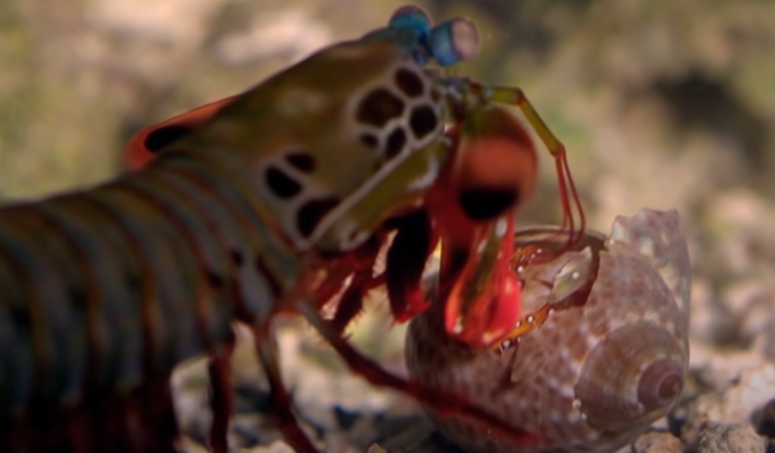

Fatos sobre o Stomatopoda
Informações gerais a respeito do Stomatopoda.
| Reino | Filo | Subfilo |
|---|---|---|
| Animalia | Arthropoda | Crustacea |
Fatos interessantes
Fato 01
Descrição

Fato 02
Descrição
Fato 03
Descrição
Um animal chamado camarão mantis é conehcido por espancar a presa antes do abate.
| Reino | Filo | Subfilo |
|---|---|---|
| Animalia | Arthropoda | Crustacea |
Descrição
Descrição
Descrição